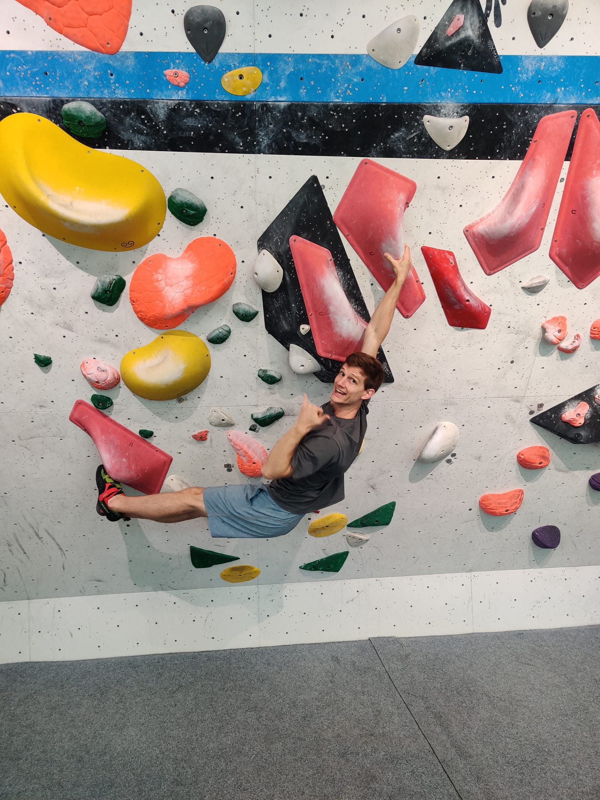
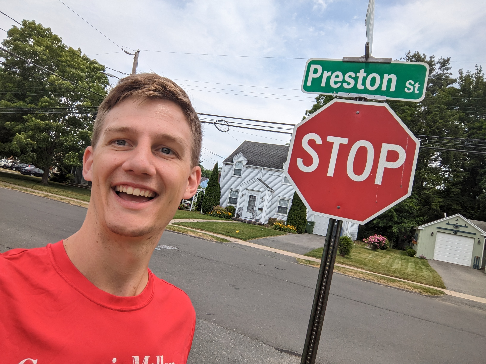

<!DOCTYPE html>
<html lang="en" class="scroll-smooth">
<head>
    <meta charset="UTF-8">
    <meta name="viewport" content="width=device-width, initial-scale=1.0">
    <title>Preston Vander Vos</title>
    <link rel="apple-touch-icon" sizes="180x180" href="assets/icons/apple-touch-icon.png">
    <link rel="icon" type="image/png" sizes="32x32" href="assets/icons/favicon-32x32.png">
    <link rel="icon" type="image/png" sizes="16x16" href="assets/icons/favicon-16x16.png">
    <link rel="manifest" href="assets/icons/site.webmanifest">
    <script src="https://cdn.tailwindcss.com"></script>
    <link rel="preconnect" href="https://rsms.me/">
    <link rel="stylesheet" href="https://rsms.me/inter/inter.css">
    <style>
        body { font-family: 'Inter', sans-serif; }
        figcaption { background-color: rgba(29, 41, 53, 0.75); } /* Semi-transparent dark bg for dark mode captions */
        .dark figcaption { background-color: rgba(29, 41, 53, 0.75); }
        html.light figcaption { background-color: rgba(255, 255, 255, 0.75); } /* Semi-transparent light bg for light mode captions */
    </style>
    <script>
        tailwind.config = {
            darkMode: 'class', // Enable class-based dark mode
            theme: {
                extend: {
                    colors: {
                        'base-100': '#1f2937', // Dark BG
                        'base-200': '#374151', // Dark Panel
                        'accent': '#6ee7b7',   // Dark Accent
                        'accent-light': '#10b981', // Light Accent
                    },
                }
            }
        }
    </script>
    <script>
        if (localStorage.theme === 'light' || (!('theme' in localStorage) && !window.matchMedia('(prefers-color-scheme: dark)').matches)) {
          document.documentElement.classList.remove('dark')
          document.documentElement.classList.add('light')
        } else {
          document.documentElement.classList.add('dark')
        }
    </script>
    <meta property="og:title" content="Preston Vander Vos | Crypto Researcher & Engineer">
    <meta property="og:description" content="A crypto-native researcher and developer with experience at top-tier firms">
    <meta property="og:image" content="https://pvandervos.com/assets/images/profile.jpg">
    <meta property="og:url" content="https://pvandervos.com/">
    <meta property="og:type" content="website">
</head>
<body class="bg-white dark:bg-base-100 text-gray-800 dark:text-gray-300 transition-colors duration-300" data-page="home">
    <script src="layout.js"></script>
    <script>
        const mainContent = `
            <section id="about" class="mb-16 scroll-mt-24">
                <h2 class="text-3xl font-bold border-b-2 border-accent-light dark:border-accent pb-2 mb-4 text-gray-900 dark:text-white">About Me</h2>
                <p class="text-lg leading-relaxed">
                    I am driven by a passion for everything cryptocurrency related. After starting my career in TradFi trading at <a href="https://www.rbc.com/" target="_blank" rel="noopener noreferrer" class="text-accent-light dark:text-accent hover:underline">RBC</a>, I transitioned fully into crypto, applying my analytical skills at top-tier firms including <a href="https://www.bitmex.com/" target="_blank" rel="noopener noreferrer" class="text-accent-light dark:text-accent hover:underline">BitMEX</a>, <a href="https://www.paradigm.co/" target="_blank" rel="noopener noreferrer" class="text-accent-light dark:text-accent hover:underline">Paradigm</a>, and <a href="https://www.chainalysis.com/" target="_blank" rel="noopener noreferrer" class="text-accent-light dark:text-accent hover:underline">Chainalysis</a>.  I'm currently working as a researcher at <a href="https://www.circle.com/" target="_blank" rel="noopener noreferrer" class="text-accent-light dark:text-accent hover:underline">Circle</a>.
                </p>
                <p class="text-lg leading-relaxed mt-4">
                    My interest in crypto began at <a href="https://www.cmu.edu/" target="_blank" rel="noopener noreferrer" class="text-accent-light dark:text-accent hover:underline">Carnegie Mellon</a>, where I took every available class on the subject, attended conferences, and joined the university's blockchain club.  I built on that foundation by getting an MSc in Information Security at <a href="https://www.ucl.ac.uk/" target="_blank" rel="noopener noreferrer" class="text-accent-light dark:text-accent hover:underline">UCL</a>, where I focused on cryptography and consensus.
                </p>
            </section>

            <section id="education" class="mb-16 scroll-mt-24">
                <h2 class="text-3xl font-bold border-b-2 border-accent-light dark:border-accent pb-2 mb-4 text-gray-900 dark:text-white">Education</h2>
                <div class="space-y-4">
                    <div>
                        <h3 class="text-xl font-semibold text-gray-800 dark:text-gray-100">MSc in Information Security</h3>
                        <p class="text-gray-600 dark:text-gray-400">University College London | 2024 - 2025</p>
                    </div>
                    <div>
                        <h3 class="text-xl font-semibold text-gray-800 dark:text-gray-100">BS in Business Administration, Minor in Computer Science</h3>
                        <p class="text-gray-600 dark:text-gray-400">Carnegie Mellon University | 2016 - 2020</p>
                    </div>
                </div>
            </section>

            <section id="experience" class="mb-16 scroll-mt-24">
                <h2 class="text-3xl font-bold border-b-2 border-accent-light dark:border-accent pb-2 mb-4 text-gray-900 dark:text-white">Work Experience</h2>
                <div class="space-y-8">
                    <div>
                        <h3 class="text-xl font-semibold text-gray-800 dark:text-gray-100">Software Engineer II, Circle</h3>
                        <p class="text-gray-600 dark:text-gray-400">San Francisco, CA | 2025 - present</p>
                    </div>
                    <div>
                        <h3 class="text-xl font-semibold text-gray-800 dark:text-gray-100">Associate Data Scientist, Chainalysis</h3>
                        <p class="text-gray-600 dark:text-gray-400">New York, NY | 2024</p>
                    </div>
                    <div>
                        <h3 class="text-xl font-semibold text-gray-800 dark:text-gray-100">Associate Product Manager, Paradigm</h3>
                        <p class="text-gray-600 dark:text-gray-400">Singapore | 2023</p>
                    </div>
                    <div>
                        <h3 class="text-xl font-semibold text-gray-800 dark:text-gray-100">Senior Data Analyst, BitMEX</h3>
                        <p class="text-gray-600 dark:text-gray-400">Vancouver, BC | 2022</p>
                    </div>
                    <div>
                        <h3 class="text-xl font-semibold text-gray-800 dark:text-gray-100">Municipal Derivatives Trading Analyst, RBC Capital Markets</h3>
                        <p class="text-gray-600 dark:text-gray-400">New York, NY | 2020 - 2021</p>
                    </div>
                </div>
            </section>

            <section id="papers" class="mb-16 scroll-mt-24">
                <h2 class="text-3xl font-bold border-b-2 border-accent-light dark:border-accent pb-2 mb-4 text-gray-900 dark:text-white">Papers</h2>
                <div class="space-y-6">
                    <div>
                        <h3 class="text-xl font-semibold text-gray-800 dark:text-gray-100">
                            <a href="https://arxiv.org/abs/2510.01216" target="_blank" rel="noopener noreferrer" class="hover:underline text-accent-light dark:text-accent">Odontoceti: Ultra-Fast DAG Consensus with Two Round Commitment</a>
                        </h3>
                        <p class="text-gray-600 dark:text-gray-400">Preston Vander Vos</p>
                        <p class="mt-1 text-gray-700 dark:text-gray-300 italic">MSc dissertation, ArXiv Preprint, 2025</p>
                    </div>
                </div>
            </section>

            <section id="projects" class="mb-16 scroll-mt-24">
                <h2 class="text-3xl font-bold border-b-2 border-accent-light dark:border-accent pb-2 mb-4 text-gray-900 dark:text-white">Projects</h2>
                <div class="mt-8">
                    <h3 class="text-2xl font-bold mb-6 text-gray-900 dark:text-white">Select UCL Projects</h3>
                    <div class="space-y-8">
                        <div>
                            <div class="flex items-center gap-x-3">
                               <h4 class="text-lg font-semibold text-gray-800 dark:text-gray-100"><a href="https://github.com/filippos-alexandros/Encode24" target="_blank" rel="noopener noreferrer" class="hover:underline text-accent-light dark:text-accent">BASED Legacy</a></h4>
                               <span class="text-xs font-semibold inline-flex items-center px-2.5 py-0.5 rounded-full bg-yellow-200 text-yellow-800 dark:bg-yellow-900 dark:text-yellow-300">
                                   🏆 Encode London 2024 Hackathon Winner
                               </span>
                            </div>
                           <p class="mt-1 text-gray-700 dark:text-gray-300">A dApp for automated, rule-based legacy planning to distribute assets and bypass probate court</p>
                       </div>
                       <div>
                            <h4 class="text-lg font-semibold text-gray-800 dark:text-gray-100">
                                <a href="https://swipelaunch.fun/" target="_blank" rel="noopener noreferrer" class="hover:underline text-accent-light dark:text-accent">SwipeLaunch</a>
                                <span class="text-lg font-semibold text-gray-800 dark:text-gray-100">
                                    (<a href="https://github.com/SwipeLaunch/" target="_blank" rel="noopener noreferrer" class="hover:underline text-accent-light dark:text-accent">code</a>)
                                </span>
                            </h4>
                            <p class="mt-1 text-gray-700 dark:text-gray-300">Tinder-like launchpad for memecoins</p>
                        </div>
                        <div>
                            <h4 class="text-lg font-semibold text-gray-800 dark:text-gray-100"><a href="https://github.com/Ethan-000/defi_mooc_lab2" target="_blank" rel="noopener noreferrer" class="hover:underline text-accent-light dark:text-accent">Flash Loan based Liquidation</a></h4>
                            <p class="mt-1 text-gray-700 dark:text-gray-300">Implemented a smart contract to perform flash loan based liquidations on the Aave protocol</p>
                        </div>
                        <div>
                            <h4 class="text-lg font-semibold text-gray-800 dark:text-gray-100"><a href="https://github.com/MKhalil01/pokemondapp" target="_blank" rel="noopener noreferrer" class="hover:underline text-accent-light dark:text-accent">Pokémon NFT Trading dApp</a></h4>
                            <p class="mt-1 text-gray-700 dark:text-gray-300">Developed a decentralized application for trading Pokémon card NFTs with a focus on security</p>
                        </div>
                        <div>
                            <h4 class="text-lg font-semibold text-gray-800 dark:text-gray-100">Privacy Enchancing Technologies labs</h4>
                            <p class="mt-1 text-gray-700 dark:text-gray-300">Mixnets & Traffic Analysis, Additive Homomorphic Encryption, Zero-Knowledge Proofs, Anonymous Credentials, Private Set Intersection</p>
                        </div>
                    </div>
                </div>

                <div class="mt-8">
                    <h3 class="text-2xl font-bold mb-6 text-gray-900 dark:text-white">Select CMU Projects</h3>
                    <div class="space-y-8">
                        <div>
                            <h4 class="text-lg font-semibold text-gray-800 dark:text-gray-100">Artificial Intelligence labs</h4>
                            <p class="mt-1 text-gray-700 dark:text-gray-300"><a href="https://ai.berkeley.edu/multiagent.html" target="_blank" rel="noopener noreferrer" class="text-accent-light dark:text-accent hover:underline">Multi-Agent Search</a>, <a href="https://ai.berkeley.edu/reinforcement.html" target="_blank" rel="noopener noreferrer" class="text-accent-light dark:text-accent hover:underline">Reinforcement Learning</a>, fine-tuning Convolutional Neural Networks, Naieve Bayes classifiers</p>
                        </div>
                        <div>
                            <h4 class="text-lg font-semibold text-gray-800 dark:text-gray-100"><a href="https://github.com/phvv/15-112-term-project" target="_blank" rel="noopener noreferrer" class="hover:underline text-accent-light dark:text-accent">Color Vision Deficiency Aid</a> (15-112 Term Project)</h4>
                            <p class="mt-1 text-gray-700 dark:text-gray-300">Created an application to aid people with color vision deficiency through diagnostic tests and image analysis tools</p>
                        </div>
                    </div>
                </div>
            </section>

            <section id="talks" class="mb-16 scroll-mt-24">
                <h2 class="text-3xl font-bold border-b-2 border-accent-light dark:border-accent pb-2 mb-4 text-gray-900 dark:text-white">Talks</h2>
                <ul class="space-y-4">
                    <li>
                        <h3 class="text-xl font-semibold text-gray-800 dark:text-gray-100">Technical Approach for Tracing Approval Phishing</h3>
                        <p class="text-gray-600 dark:text-gray-400">Trace DC, Washington DC | 2024</p>
                    </li>
                </ul>
            </section>

            <section id="interests" class="scroll-mt-24">
                <h2 class="text-3xl font-bold border-b-2 border-accent-light dark:border-accent pb-2 mb-4 text-gray-900 dark:text-white">Interests</h2>
                <p class="text-lg leading-relaxed">
                    Beyond my work in crypto, I enjoy challenges that engage both my mind and body. I have a mild obsession with board and card games and am always down to learn new ones. On the physical side, I've been a competitive swimmer my entire life, never pass up a good hike, and recently added rock climbing to the mix.
                </p>

                <div class="mt-8 grid grid-cols-1 md:grid-cols-9 gap-4">
                    <figure class="relative rounded-lg overflow-hidden shadow-lg md:col-span-4">
                        
                        <figcaption class="absolute bottom-0 left-0 w-full p-2 text-center text-sm text-gray-800 dark:text-white transition-colors duration-300">
                            Hang tight 🤙
                        </figcaption>
                    </figure>
                    <figure class="relative rounded-lg overflow-hidden shadow-lg md:col-span-5">
                        
                        <figcaption class="absolute bottom-0 left-0 w-full p-2 text-center text-sm text-gray-800 dark:text-white transition-colors duration-300">
                            Preston-ception
                        </figcaption>
                    </figure>
                </div>
            </section>
        `;
        document.addEventListener('DOMContentLoaded', () => {
            loadLayout(mainContent);
        });
    </script>
</body>
</html>